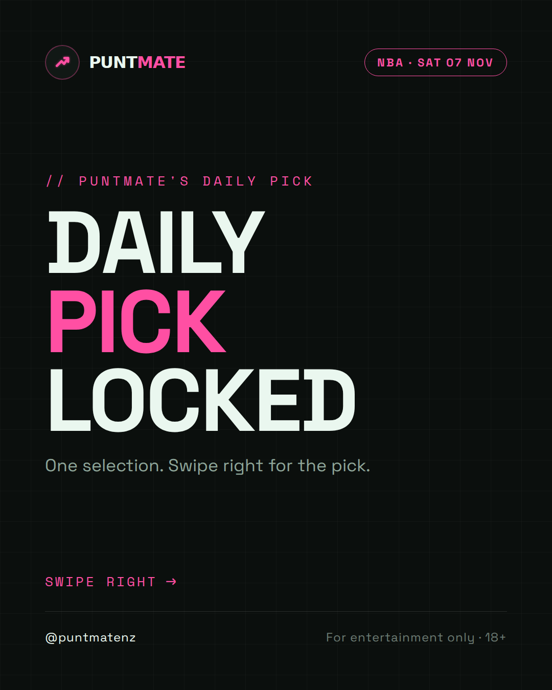
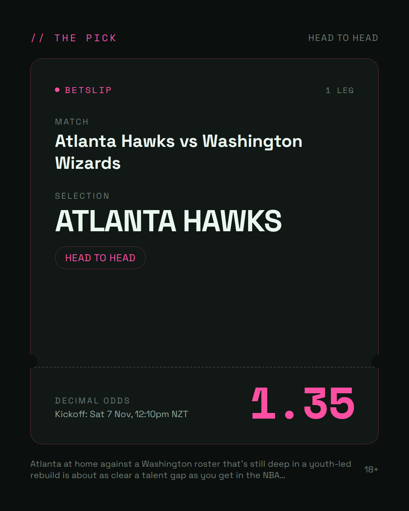
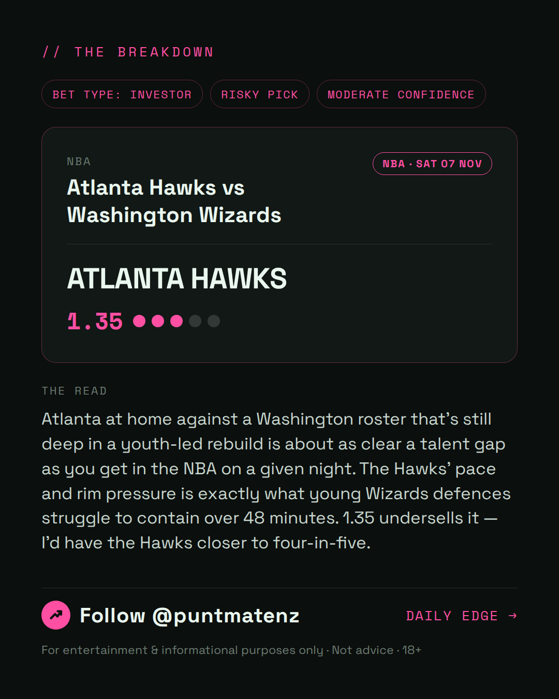
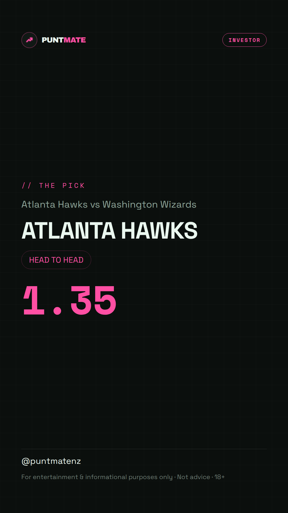

*🎯 PUNTMATE NZ — NBA* 🏟 Atlanta Hawks vs Washington Wizards *PICK:* ATLANTA HAWKS *ODDS:* 1.35 (Head to Head) *BET TYPE: INVESTOR* _Atlanta at home against a Washington roster that's still deep in a youth-led rebuild is about as clear a talent gap as you get in the NBA on a given night. The Hawks' pace and rim pressure is exactly what young Wizards defences struggle to contain over 48 minutes. 1.35 undersells it — I'd have the Hawks closer to four-in-five._ ────────────────── 📲 Join Telegram for daily picks ⚠️ For entertainment & informational purposes only. Not advice. 18+.
🎯 NBA — Atlanta Hawks vs Washington Wizards ATLANTA HAWKS @ 1.35 (Head to Head) BET TYPE: INVESTOR An Investor selection, not a certainty. Atlanta at home against a Washington roster that's still deep in a youth-led rebuild is about as clear a talent gap as you get in the NBA on a given night. The Hawks' pace and rim pressure is exactly what young Wizards defences struggle to contain over 48 minutes. 1.35 undersells it — I'd have the Hawks closer to four-in-five. Follow for daily value picks → @puntmatenz ⚠️ For entertainment & informational purposes only. Not advice. 18+. #PuntmateNZ #SportsBetting #NZTAB #NBA
| has_pick | True |
| pick_id | 2026-11-07_Atlanta_Hawks_vs_Washington_Wizards_dryrun |
| run_id | 42289637615 |
| generated_at | 2026-11-06T20:38:38.030526+00:00 |
| post_date | 2026-11-07 |
| match | Atlanta Hawks vs Washington Wizards |
| sport | basketball_nba |
| sport_label | NBA |
| market | Head to Head |
| selection | ATLANTA HAWKS |
| odds | 1.35 |
| bet_type | INVESTOR_BET |
| bet_type_label | BET TYPE: INVESTOR |
| bet_type_reason | An Investor selection, not a certainty. Atlanta at home against a Washington roster that's still deep in a youth-led rebuild is about as clear a talent gap as you get in the NBA on a given night. The Hawks' pace and rim pressure is exactly what young Wizards defences struggle to contain over 48 minutes. 1.35 undersells it — I'd have the Hawks closer to four-in-five. |
| classification | RISKY_PICK |
| risk | RISKY_PICK |
| confidence | MODERATE |
| confidence_label | MODERATE |
| final_explanation | Atlanta at home against a Washington roster that's still deep in a youth-led rebuild is about as clear a talent gap as you get in the NBA on a given night. The Hawks' pace and rim pressure is exactly what young Wizards defences struggle to contain over 48 minutes. 1.35 undersells it — I'd have the Hawks closer to four-in-five. |
| public_caution | Keep this one light — the value's there but so is the uncertainty. |
| theme | night |
| carousel_paths | ['data/review/2026-11-07_Atlanta_Hawks_vs_Washington_Wizards_dryrun/cover.png', 'data/review/2026-11-07_Atlanta_Hawks_vs_Washington_Wizards_dryrun/tip.png', 'data/review/2026-11-07_Atlanta_Hawks_vs_Washington_Wizards_dryrun/breakdown.png'] |
| carousel_urls | ['https://raw.githubusercontent.com/kingofthecastle24/puntmate/main/data/cards/2026-11-07_Atlanta_Hawks_vs_Washington_Wizards_night_1_cover.png', 'https://raw.githubusercontent.com/kingofthecastle24/puntmate/main/data/cards/2026-11-07_Atlanta_Hawks_vs_Washington_Wizards_night_2_tip.png', 'https://raw.githubusercontent.com/kingofthecastle24/puntmate/main/data/cards/2026-11-07_Atlanta_Hawks_vs_Washington_Wizards_night_3_breakdown.png'] |
| story_path | data/review/2026-11-07_Atlanta_Hawks_vs_Washington_Wizards_dryrun/story.png |
| story_url | https://raw.githubusercontent.com/kingofthecastle24/puntmate/main/data/cards/2026-11-07_Atlanta_Hawks_vs_Washington_Wizards_night_story.png |
| intended_platforms | ['telegram', 'instagram_feed', 'instagram_story', 'facebook'] |
| workflow_state | GENERATED |
| has_punter_multi | False |
| has_gambler_multi | False |
| has_degenerate_multi | False |